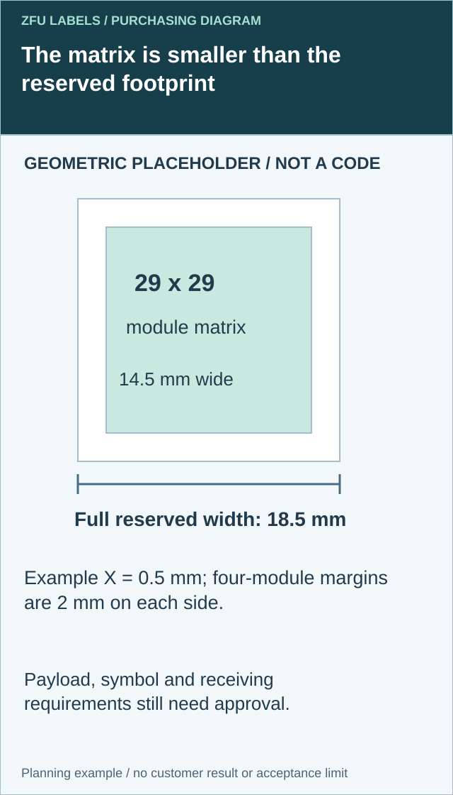
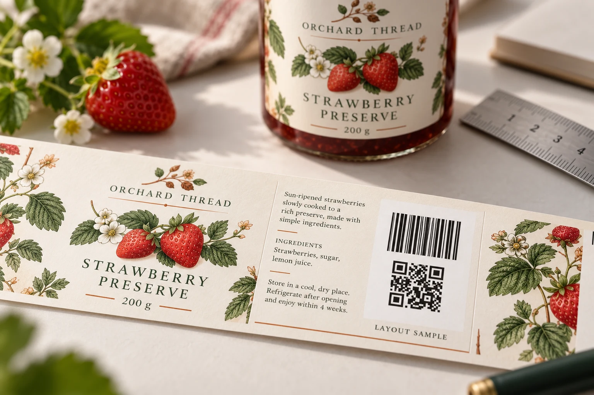

What should a QR code on food packaging do?
Specify the scanning job first: a consumer information link, retail product identification or changing production data. Have the responsible data owner approve the content and the receiving channel confirm its requirements. A phone opening a web page does not by itself establish checkout acceptance.
A QR matrix can fit inside the artwork while its required quiet zone does not. Reserve the complete symbol footprint before squeezing the label layout around it.
I would settle one question before discussing the extra ink: what must happen when this package is scanned? Opening a recipe page, identifying an item at checkout and reading a production lot are different jobs. The purchase order needs to say which one you are buying.
For food and beverage buyers preparing barcode and QR code labels, the practical starting point is a controlled layout and an agreed data owner. A small square on the artwork does not settle either.

Count the surrounding space before approving the square
Identify the actual supplied QR symbol, its number of modules across and its proposed X-dimension, meaning the physical size of one module. Do not estimate those values from a screenshot. The implementation owner should supply the approved file and the applicable receiving specification.


GS1's retail 2D implementation guideline specifies a QR quiet zone of four X-dimensions on each side. This rule concerns QR; it must not be copied to every two-dimensional symbol. The same guidance distinguishes Data Matrix, whose surrounding requirement differs. Confirm the actual symbol and application rather than call every square a QR.
For a square QR with N modules across and module width X, the matrix width is N times X. Adding four modules on both sides makes the complete reserved width (N plus 8) times X. The diagram shows the surrounding space as a different object from the illustrative matrix; it is not a usable barcode.
| Footprint field | Calculation or evidence | What the drawing must preserve |
|---|---|---|
| Symbol identity | Approved file, syntax and module count | No redraw from a decorative example |
| Matrix width | N multiplied by X | Physical module size, without distortion |
| Each QR margin | Four times X under the cited rule | Clear space on every side |
| Reserved width | (N plus 8) multiplied by X | The complete footprint, not just dark modules |
| Package position | Actual final-size panel and later overlays | Border, seam and additional print remain outside the reserved area |
An arithmetic illustration uses 29 modules at 0.5 mm per module. The matrix is 14.5 mm wide, each surrounding margin is 2 mm and the full reserved square is 18.5 mm wide. These values do not select a symbol version, establish a universal retail size or approve a payload. The responsible specialist still needs the actual data and channel requirements.
If the footprint conflicts with copy or a border, compare supported alternatives with the designer and code owner. Removing an optional graphic may be preferable to shrinking modules below the applicable requirement. Changing the payload or encoding can change the symbol; do not make that change solely to fit without reviewing its purpose.
Retain the resulting file and reserved-area drawing through finishing and application. A later date stamp, promotional sticker or wrap overlap can invade space that was clear in the flat artwork. Final-pack checks and any required verification remain separate from this arithmetic. A correctly reserved square is one layout prerequisite, not proof of checkout acceptance.
What Sunrise 2027 changes in your next label order
GS1 US describes Sunrise 2027 as an industry transition toward retail systems that can read and process 2D barcodes. Treat it as a planning milestone, not evidence that every retailer is ready or that every possible 2D feature must be implemented immediately.
The GS1 US transition overview explicitly links the move away from dual marking to trading-partner requirements. Do not remove the existing linear code from a retail pack just because the new QR looks cleaner. Confirm the receiving channels and their requirements first.
That is the procurement issue: the same artwork may serve a small independent shop and a distributor supplying several retail systems. One positive response does not approve the other routes.
Buy the scanning job, then choose the code
Use this as a briefing table, not a substitute for the relevant GS1 and retailer specification.
| Required job | Decision before printing | Owner to involve |
|---|---|---|
| Open recipes or product information | Is a consumer web link sufficient, or is a standards-based retail identifier also needed? | Brand and digital-content owner |
| Identify the item at retail checkout | Which accepted symbol and data syntax does the channel require, and must the linear code remain? | Brand, GS1 adviser and retailer |
| Carry changing lots or dates | Where is that data created, and who matches it to the filled product? | Co-packer and production-data owner |
| Connect the product identity to web content | Who controls the encoded identifier, domain and destination over the package's life? | Brand and implementation provider |
An ordinary marketing QR and a QR using GS1 Digital Link are not interchangeable instructions for a printer. GS1 US's guidance for brands explains the connection between product identity and digital information. Have the responsible implementation provider supply or approve the encoded content; the printer should not invent your identifiers.
Two buyers, two sensible decisions
Consider an illustrative jam brand moving from direct sales into grocery distribution. Its designer wants to replace the back-label barcode with a recipe QR. Procurement is trying to avoid paying for another artwork revision next season.
I would keep the existing retail identification route until the channels approve the change, then review space for the additional code. The immediate saving from deleting a code is not worth an untested checkout assumption.
A second illustrative buyer supplies a closed private-label route where the retailer and co-packer have already agreed the supported symbol, data and acceptance process. That buyer should follow the documented route rather than add another code automatically. The GS1 retail implementation guideline describes a possible direct transition for retailer private-label products when the ecosystem is ready.
These are planning examples, not customer records. Their difference is the receiving system, not whether one purchasing manager is more enthusiastic about technology.
Reserve usable space before approving the label size
The original placement problem still matters. Keep the code away from a wrap seam, sharp curve, fold or area that will be covered later. On clear film, check the background on the filled package; a white artwork preview cannot prove contrast on a dark preserve or juice.
Agree the symbol dimensions, surrounding clear space, human-readable information and final substrate with the code specialist and printer. Do not specify one universal QR size for every payload and package. GS1's QR Code best-practice guide is a useful reference before final artwork approval.

Ask for a production-like label on the actual pack when curvature, glare or moisture could change the result. A cheap material sample and a finished, coded package answer different questions. For the actual product construction, our custom food label overview outlines the packaging types to discuss.
Split the quote into work someone can approve
“Add a QR” is too loose for a purchase order. Ask suppliers to separate the following where applicable:
- Artwork and code placement: approved code files, layout changes, versions and proof rounds.
- Printed construction: material, adhesive, finish, label size, quantity per artwork and roll setup.
- Data services: generating or handling changing records, validation, exceptions and reconciliation.
- Acceptance evidence: samples, agreed verification work and receiving-system checks, with named responsibility.
- Digital operation: domain, redirects, content maintenance and recurring service charges, if supplied.
This is a comparison framework, not a quoted price. Request the same quantities, specifications, currency, freight and tax basis from each supplier. Also identify which services are outside the printer's scope. A clear exclusion is more useful than a promise nobody can deliver.
If every jar needs the same product-level code, do not pay for serialization without a reason. If each batch must carry different data, establish that workflow before ordering. The variable-data label guide covers record handling in more detail.
Approve a repeatable release process
My proposed release record would connect the SKU, approved identifier, artwork revision, final construction, test evidence and named approvers. Establish the receiving partner's acceptance criteria before requesting a report.
Keep print quality and system behavior as separate questions. A verifier's result does not by itself prove that checkout selected the intended item; a phone opening a page does not establish print-quality acceptance. Use the barcode verification versus scanning guide for that distinction.
For a repeat order, record what triggers another review: changed dimensions, stock, finish, code content, application position or receiving requirements. Where a change could affect acceptance, agree the necessary checks rather than silently carrying over the old approval.
The useful saving is avoiding an uncertain decision on a full roll of printed labels.
Questions to settle before the next order
Can we keep the linear barcode and add a GS1 QR?
Dual marking is part of the transition approach. Confirm the accepted code content, layout and receiving-system behavior with the relevant partners before approving production.
Does the label printer supply our GTIN?
Do not assume so. The brand must arrange valid product identification and approve the data. Ask the printer exactly which artwork, data-handling and verification services it provides.
Is a marketing QR enough for checkout?
A link opening in a phone browser does not establish retail acceptance. Obtain the channel's symbol and data requirements, then test the intended workflow.
Prepare one complete barcode-label brief
For your next quote, include package photos, finished label dimensions, material and finish, quantity per SKU, approved code files or data-owner contact, receiving-channel requirements and the requested sample or acceptance work.
Send your barcode-label brief for a review of label fit and printing requirements. Attach artwork in the email or WhatsApp message; the website's contact form prepares an email draft rather than uploading files.
Resolve the specific label handoff
Include approved symbol file, module count and X-dimension, final panel size and receiving requirement.
Prepare the label specification inquiry. The contact page opens an email draft for review; send files through the listed email or WhatsApp route. Actual supply scope, samples, pricing and timing require project confirmation.
Related decisions: Barcode Verification vs Scanning: Link Reports to Delivered Labels; Clear Labels on Dark Bottles: Approve the White Mask; Beverage Multipack Labels: Approve the Pack-Level Scan